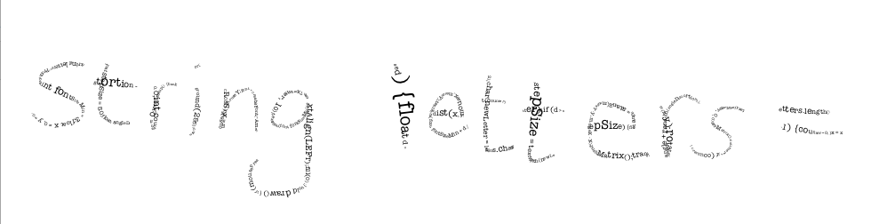

String letters = "String letters=\"PFont font;int fontSizeMin = 3;float x = 0, y = 0;float stepSize = 5.0;float angleDistortion = 0.0;int counter = 0;void setup() {size(1000, 1000);background(255);smooth();cursor(CROSS);x = mouseX;y = mouseY;font = createFont(\"American Typewriter\", 10);textFont(font, fontSizeMin);textAlign(LEFT);fill(0);}void draw() {if (mousePressed) {float d = dist(x, y, mouseX, mouseY);textFont(font, fontSizeMin + d / 2);char newLetter = letters.charAt(counter);stepSize = textWidth(newLetter);if (d > stepSize) {float angle = atan2(mouseY - y, mouseX - x);pushMatrix();translate(x, y);rotate(angle + random(angleDistortion));text(newLetter, 0, 0);popMatrix();counter++;if (counter > letters.length()-1) {counter = 0;}x = x + cos(angle) * stepSize;y = y + sin(angle) * stepSize;}}}void mousePressed() {x = mouseX;y = mouseY;}void keyPressed() {if (key == 's') saveFrame(\"frame-###.jpg\");if (keyCode == UP) angleDistortion += 0.1;if (keyCode == DOWN) angleDistortion -= 0.1;}\";PFont font;int fontSizeMin = 3;float x = 0, y = 0;float stepSize = 5.0;float angleDistortion = 0.0;int counter = 0;void setup() {size(1000, 1000);background(255);smooth();cursor(CROSS);x = mouseX;y = mouseY;font = createFont(\"American Typewriter\", 10);textFont(font, fontSizeMin);textAlign(LEFT);fill(0);}void draw() {if (mousePressed) {float d = dist(x, y, mouseX, mouseY);textFont(font, fontSizeMin + d / 2);char newLetter = letters.charAt(counter);stepSize = textWidth(newLetter);if (d > stepSize) {float angle = atan2(mouseY - y, mouseX - x);pushMatrix();translate(x, y);rotate(angle + random(angleDistortion));text(newLetter, 0, 0);popMatrix();counter++;if (counter > letters.length()-1) {counter = 0;}x = x + cos(angle) * stepSize;y = y + sin(angle) * stepSize;}}}void mousePressed() {x = mouseX;y = mouseY;}void keyPressed() {if (key == 's') saveFrame(\"frame-###.jpg\");if (keyCode == UP) angleDistortion += 0.1;if (keyCode == DOWN) angleDistortion -= 0.1;}";
PFont font;
int fontSizeMin = 3;
float x = 0, y = 0;
float stepSize = 5.0;
float angleDistortion = 0.0;
int counter = 0;
void setup() {
size(1000, 1000);
background(255);
smooth();
cursor(CROSS);
x = mouseX;
y = mouseY;
font = createFont("American Typewriter", 10);
textFont(font, fontSizeMin);
textAlign(LEFT);
fill(0);
}
void draw() {
if (mousePressed) {
float d = dist(x, y, mouseX, mouseY);
textFont(font, fontSizeMin + d / 2);
char newLetter = letters.charAt(counter);
stepSize = textWidth(newLetter);
if (d > stepSize) {
float angle = atan2(mouseY - y, mouseX - x);
pushMatrix();
translate(x, y);
rotate(angle + random(angleDistortion));
text(newLetter, 0, 0);
popMatrix();
counter++;
if (counter > letters.length()-1) {
counter = 0;
}
x = x + cos(angle) * stepSize;
y = y + sin(angle) * stepSize;
}
}
}
void mousePressed() {
x = mouseX;
y = mouseY;
}
void keyPressed() {
if (key == 's') saveFrame("frame-###.jpg");
if (keyCode == UP) angleDistortion += 0.1;
if (keyCode == DOWN) angleDistortion -= 0.1;
}
{kind=link}
{kind=link}